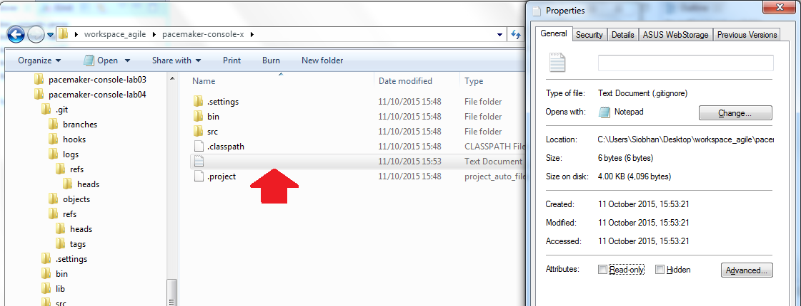
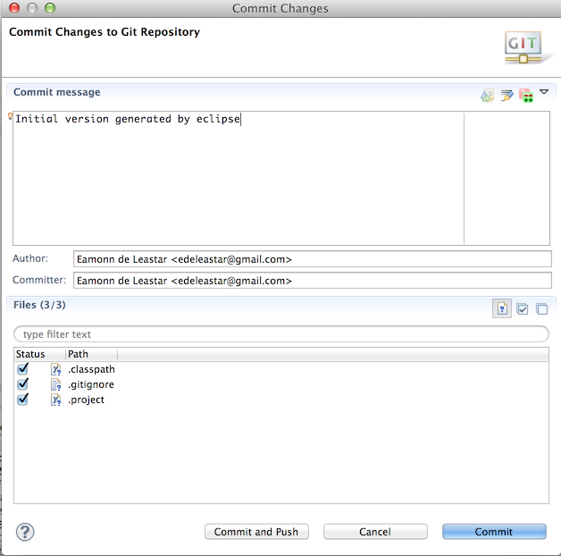
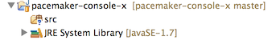
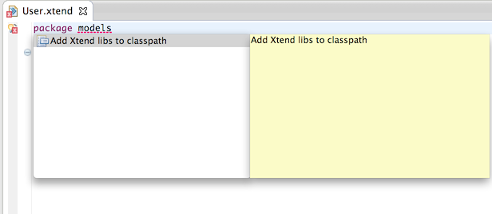
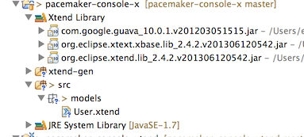
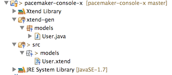
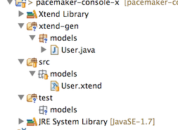
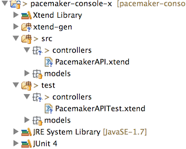

Create a new eclipse java project called pacemaker-console-x.
Initialize the project as a git repository (see lab 1, step 6) - and replace the generated .gitignore file with this one here:
# Ignore all dotfiles...
.*
# except for .gitignore
!.gitignore
!.classpath
!.project
*.java
*.xml
/bin
./xtend-gen/**
.settingsNote, your .gitignore file is the one selected in this illustration:

Now commit the project - with a simple message:

Your blank workspace will look like this:

In src, create a new package called 'models'. Then, in this package, create a new xtend class called 'User'. Xtend options should be available from the 'other' category:
The generated class will trigger errors. Fix these using autocorrect -

This should reconfigure workspace as follows:

If the error persists in the editor - then close and reopen the file.
Now we will try or first xtend class:
import org.eclipse.xtend.lib.annotations.Data
@Data class User
{
Long id
String firstname
String lastname
String email
String password
}Replace the blank User with the above and save. Some interesting things will happen to the workspace:

If Eclipse didn't create the xtend-gen folder, right click on the project name and select Build Project.
Have a look at the new java version of our User class:
package models;
import org.eclipse.xtend.lib.annotations.Data;
import org.eclipse.xtext.xbase.lib.Pure;
import org.eclipse.xtext.xbase.lib.util.ToStringBuilder;
@Data
@SuppressWarnings("all")
public class User {
private final Long id;
private final String firstname;
private final String lastname;
private final String email;
private final String password;
public User(final Long id, final String firstname, final String lastname, final String email, final String password) {
super();
this.id = id;
this.firstname = firstname;
this.lastname = lastname;
this.email = email;
this.password = password;
}
@Override
@Pure
public int hashCode() {
final int prime = 31;
int result = 1;
result = prime * result + ((this.id== null) ? 0 : this.id.hashCode());
result = prime * result + ((this.firstname== null) ? 0 : this.firstname.hashCode());
result = prime * result + ((this.lastname== null) ? 0 : this.lastname.hashCode());
result = prime * result + ((this.email== null) ? 0 : this.email.hashCode());
result = prime * result + ((this.password== null) ? 0 : this.password.hashCode());
return result;
}
@Override
@Pure
public boolean equals(final Object obj) {
if (this == obj)
return true;
if (obj == null)
return false;
if (getClass() != obj.getClass())
return false;
User other = (User) obj;
if (this.id == null) {
if (other.id != null)
return false;
} else if (!this.id.equals(other.id))
return false;
if (this.firstname == null) {
if (other.firstname != null)
return false;
} else if (!this.firstname.equals(other.firstname))
return false;
if (this.lastname == null) {
if (other.lastname != null)
return false;
} else if (!this.lastname.equals(other.lastname))
return false;
if (this.email == null) {
if (other.email != null)
return false;
} else if (!this.email.equals(other.email))
return false;
if (this.password == null) {
if (other.password != null)
return false;
} else if (!this.password.equals(other.password))
return false;
return true;
}
@Override
@Pure
public String toString() {
ToStringBuilder b = new ToStringBuilder(this);
b.add("id", this.id);
b.add("firstname", this.firstname);
b.add("lastname", this.lastname);
b.add("email", this.email);
b.add("password", this.password);
return b.toString();
}
@Pure
public Long getId() {
return this.id;
}
@Pure
public String getFirstname() {
return this.firstname;
}
@Pure
public String getLastname() {
return this.lastname;
}
@Pure
public String getEmail() {
return this.email;
}
@Pure
public String getPassword() {
return this.password;
}
}This have been generated by eclipse - and is compiled by the standard java compiler.
Commit these changes to git. Note that our .gitignore means that we will not be offered an opportunity to commit the java source. This is intentional - as we are happy to work in xtend only.
The next step will be to create a unit test to verify our understanding of the Xtend class. Before doing this, add JUnit4 as a library for the project (Project->Properties->Build Path->Libraries->Add Library)
In Eclipse, create a new 'source folder' called 'test' in the root of the project. In that folder create an new package called models:

Create a new xtend class called 'UserTest' in this package, and incorporate the following:
package models
import static org.junit.Assert.*
import org.junit.Test
import org.junit.Before
import org.junit.After
class UserTest
{
val String userStr = 'User [\n id = 0\n firstname = "homer"\n lastname = "simpson"\n email = "homer@simpson.com"\n password = "secret"\n]'
var User homer
@Before
def void setup()
{
homer = new User(0l, "homer", "simpson", "homer@simpson.com", "secret")
}
@After
def void tearDown()
{
homer = null
}
@Test
def void testCreate()
{
assertEquals ("homer", homer.firstname)
assertEquals ("simpson", homer.lastname)
assertEquals ("homer@simpson.com", homer.email)
assertEquals ("secret", homer.password)
}
@Test
def void testToString()
{
assertEquals (userStr, homer.toString)
}
}This test should pass - and verifies our understanding of how simple @Data classes in xtend function. We might try another simple test:
@Test def void testEquals()
{
val anotherHomer = new User(0l, "homer", "simpson", "homer@simpson.com", "secret")
val marge = new User(0l, "marge", "simpson", "marge@simpson.com", "secret")
assertEquals (homer, anotherHomer)
assertNotSame (homer, anotherHomer)
assertNotEquals(homer, marge)
}This verifies that the generated equals() method works as expected. Commit these changes with a suitable message.
Create a new model class called Activity:
package models
import org.eclipse.xtend.lib.annotations.Data
@Data class Activity
{
Long id
String type
String location
double distance
}and a new test to exercise it:
package models
import static org.junit.Assert.*
import org.junit.Test
import org.junit.Before
import org.junit.After
class ActivityTest
{
val String activityStr = 'Activity [\n id = 0\n type = "walk"\n location = "fridge"\n distance = 0.001\n]'
var Activity activity
@Before
def void setup()
{
activity = new Activity (0l, "walk", "fridge", 0.001)
}
@After
def void tearDown()
{
activity = null
}
@Test
def void testCreate()
{
assertEquals ("walk", activity.type)
assertEquals ("fridge", activity.location)
assertEquals (0.0001, 0.001, activity.distance)
}
@Test
def void testToString()
{
assertEquals (activityStr, activity.toString)
}
}This test should pass. There is no need to test the equals() method, as we have verified this basic operation for User.
We now establish the relationship between users and activities - introduce a new attribute to the User class:
@Accessors Map<Long, Activity> activities = new HashMap(user autocorrect to bring in the appropriate includes)
Run our unit tests - the toString test for User will fail immediately. This is because our generated toString method is now also rendering the activities attribute. Change the test fixture to accommodate this:
val String userStr = 'User [\n id = 0\n firstname = "homer"\n lastname = "simpson"\n email = "homer@simpson.com"\n password = "secret"\n activities = {}\n]'The test should now succeed.
We can complete the model classes now - introduce a new Location class:
package models
import org.eclipse.xtend.lib.annotations.Data
@Data class Location
{
float latitude
float longitude
}and in Activity, establish the relationship to Location:
@Accessors List<Location> route = new ArrayListAs with UserTest, the ActivityTest will fail - so we adjust the fixture to include the new reference to Locations:
val String activityStr = 'Activity [\n id = 0\n type = "walk"\n location = "fridge"\n distance = 0.001\n route = ArrayList ()\n]'The tests should now pass.
For the moment we choose not to introduce tests for Location - as the class is so simple we would merely be testing the generated code. This is unnecessary, the tests we have written so far should be enough to confirm our understanding of how these @Data Xtend classes work.
Commmit the changes made so far.
Create a new package called 'controllers' and a class therein called "PacemakerAPI". Mirror this with a corresponding test class:

We will try writing the unit tests slightly ahead of the class under test. In the pacemakerAPITest, lets bring in the basic test support:
package controllers
import static org.junit.Assert.*
import org.junit.Test
import org.junit.Before
import org.junit.After
import models.User
import models.Location
import controllers.PacemakerAPI
class PacemakerAPITest
{
@Before
def void setup()
{
}
@After
def void tearDown()
{
}
}Now create a fixture:
var PacemakerAPI pacemakerAPI
@Before
def void setup()
{
pacemakerAPI = new PacemakerAPI()
}
@After
def void tearDown()
{
pacemakerAPI = null
}... and a new test:
@Test def void createUser()
{
val homer = new User(1l, "homer", "simpson", "homer@simpson.com", "secret")
assertEquals (0, pacemakerAPI.users.size)
val id = pacemakerAPI.createUser("homer", "simpson", "homer@simpson.com", "secret")
assertEquals (1, pacemakerAPI.users.size)
assertEquals (homer, pacemakerAPI.getUser(id))
}This will fail to compile - as the PacemakerAPI class is currently blank.
We can try the absolute minimum to get the test to compile - and no more. i.e. we would like the test to compile - and then fail when run. Here is a version of PacemakerAPI that will at least compile:
package controllers
import models.User
import java.util.Collection
class PacemakerAPI
{
@Accessors Collection<User> users
def Long createUser (String firstName, String lastName, String email, String password)
{
}
def getUser (Long id)
{
}
}Note: if your test class isn't compiling after copying in the above code, build the project again by right clicking on the project name and selecting "Build Project".
Try the test now - and verify that it compiles successfully, although fails to execute.
The following version of PacemakerAPI should pass:
class PacemakerAPI
{
static long userIndex = 0
val Map<Long, User> userMap = new HashMap
@Accessors Collection<User> users = userMap.values
def createUser (String firstName, String lastName, String email, String password)
{
userIndex = userIndex + 1
userMap.put(userIndex, new User (userIndex, firstName, lastName, email, password))
userIndex
}
def getUser (Long id)
{
userMap.get(id)
}
}Note the subtle change in the signature for createUser.
Commit these changes.
Introduce some test data into PacemakerAPI class we can use to exercise the api more throughly:
public static val users = newArrayList
( new User (1l, "marge", "simpson", "marge@simpson.com", "secret"),
new User (2l, "lisa", "simpson", "lisa@simpson.com", "secret"),
new User (3l, "bart", "simpson", "bart@simpson.com", "secret"),
new User (4l, "maggie","simpson", "maggie@simpson.com", "secret") )Now the setup method can create 4 users:
@Before
def void setup()
{
pacemakerAPI = new PacemakerAPI()
users.forEach [pacemakerAPI.createUser(firstname, lastname, email, password)]
}This will require a slight change to the existing test:
@Test
def void createUser()
{
val homer = new User(5L, "homer", "simpson", "homer@simpson.com", "secret")
assertEquals (users.size, pacemakerAPI.users.size)
val id = pacemakerAPI.createUser("homer", "simpson", "homer@simpson.com", "secret")
assertEquals (users.size+1, pacemakerAPI.users.size)
assertEquals (homer, pacemakerAPI.getUser(id))
}... and we can introduce a more complete test of addActivity:
@Test
def void testUsers()
{
assertEquals (users.size, pacemakerAPI.users.size)
assertEquals (users.size, pacemakerAPI.users.size)
users.forEach [ val eachUser = pacemakerAPI.getUser(email)
assertEquals (it, eachUser)
assertNotSame(it, eachUser) ]
}This last test will fail to compile, as we have yet to implement getUser taking an email.
Here is a rework of PacemakerAPI to accommodate the a new email index:
class PacemakerAPI
{
static long userIndex = 0
val Map<Long, User> userMap = new HashMap
val Map<String, User> userEmailMap = new HashMap
@Accessors Collection<User> users = userMap.values
def createUser (String firstName, String lastName, String email, String password)
{
userIndex = userIndex + 1
val user = new User (userIndex, firstName, lastName, email, password)
userMap.put(userIndex, user)
userEmailMap.put(user.email, user)
userIndex
}
def getUser (Long id)
{
userMap.get(id)
}
def getUser (String email)
{
userEmailMap.get(email)
}Run all of the tests again - we still have a fail, but this time back in the test we thought we had concluded. Why is this?
The fix is to intoduce a constructor into PacemakerAPI to reset the index to 0 every time we create a PacemakerAPI object:
new()
{
userIndex = 0
}Test this again, it should pass.
We should also introduce ability to delete users. First, the test:
@Test
def void testDeleteUsers()
{
assertEquals (users.length, pacemakerAPI.users.size)
val user = pacemakerAPI.getUser("marge@simpson.com")
pacemakerAPI.deleteUser(user.id)
assertEquals (users.length-1, pacemakerAPI.users.size)
}.. and the implementation:
def deleteUser (Long id)
{
userEmailMap.remove(userMap.get(id))
userMap.remove(id)
}All test should pass.
Commit changes.
The following three methods in PacemakerAPI should round of the features we need:
def Activity createActivity(Long id, String type, String location, double distance)
{
}
def Activity getActivity (Long id)
{
}
def void addLocation (Long id, float latitude, float longitude)
{
}These are how we might articulate the tests:
@Test def void testAddActivity()
{
val activity = pacemakerAPI.createActivity(pacemakerAPI.getUser("marge@simpson.com").id, "run", "springfield", 5)
val returnedActivity = pacemakerAPI.getActivity(activity.id);
assertEquals(activity, returnedActivity);
}
@Test def void testAddActivityWithSingleLocation()
{
val activity = pacemakerAPI.createActivity(pacemakerAPI.getUser("marge@simpson.com").id, "run", "springfield", 5)
val location = new Location(23.3f, 33.3f)
val returnedActivity = pacemakerAPI.getActivity(activity.id)
pacemakerAPI.addLocation(returnedActivity.id, location.latitude, location.longitude)
val otherActivity = pacemakerAPI.getActivity(returnedActivity.id)
assertEquals (1, otherActivity.route.size)
assertEquals(0.0001, location.latitude, otherActivity.route.get(0).latitude)
assertEquals(0.0001, location.longitude, otherActivity.route.get(0).longitude);
}
@Test def void testAddActivityWithMultipleLocation()
{
val locations = newArrayList
(
new Location(23.3f, 33.3f),
new Location(34.4f, 45.2f),
new Location(25.3f, 34.3f),
new Location(44.4f, 23.3f)
)
val activity = pacemakerAPI.createActivity(pacemakerAPI.getUser("marge@simpson.com").id, "run", "springfield", 5)
val returnedActivity = pacemakerAPI.getActivity(activity.id)
locations.forEach[ pacemakerAPI.addLocation(returnedActivity.id, latitude, longitude)]
val otherActivity = pacemakerAPI.getActivity(returnedActivity.id)
assertEquals (locations.size, otherActivity.route.size)
assertEquals (locations, otherActivity.route)
}These tests are reasonably exhaustive. Now to implement activities in PacemakerAPI.
First, a revision of the key attributes:
class PacemakerAPI
{
static long userIndex = 0
static long activityIndex = 0
val Map<Long, User> userMap = new HashMap
val Map<String, User> userEmailMap = new HashMap
var Map<Long, Activity> activityMap = new HashMap
@Accessors Collection<User> users = userMap.values
new()
{
userIndex = 0
activityIndex = 0
}... and here is the implementation of the new methods stubbed earlier:
def Activity createActivity(Long id, String type, String location, double distance)
{
var Activity activity = null;
var user = userMap.get(id)
if (null != user)
{
activityIndex = activityIndex + 1
activity = new Activity (activityIndex, type, location, distance)
user.activities.put(activity.id, activity);
activityMap.put(activity.id, activity);
}
return activity;
}
def getActivity (Long id)
{
activityMap.get(id)
}
def void addLocation (Long id, float latitude, float longitude)
{
val activity = activityMap.get(id)
if (null != activity)
{
activity.route.add(new Location(latitude, longitude));
}
}Re-run the tests; they should all work.
We now have a reasonably comprehensive version of the API implemented. More importantly, we have a robust and expressive set of tests which will stand to our benefit as we introduce new features and capabilities.
The final test sequence is to verify correct implementation of the persistence mechanism. This will be implemented in a new package called utils.
Create this package now, and incorporate the following interface:
package utils
interface Serializer
{
def void push(Object o)
def Object pop()
def void write()
def void read()
}In the same package, introduce this implementation of Serializer:
package utils
import com.thoughtworks.xstream.XStream;
import com.thoughtworks.xstream.io.xml.DomDriver;
import java.io.File;
import java.io.FileReader;
import java.io.FileWriter;
import java.io.ObjectInputStream;
import java.io.ObjectOutputStream;
import java.util.Deque
import java.util.ArrayDeque
class XMLSerializer implements Serializer
{
var Deque<Object> stack = new ArrayDeque
val File file;
new (File file)
{
this.file = file
}
def override void push(Object o)
{
stack.push(o)
}
def override Object pop()
{
return stack.pop();
}
@SuppressWarnings("unchecked")
def override void read()
{
var ObjectInputStream is = null
try
{
val xstream = new XStream(new DomDriver())
is = xstream.createObjectInputStream(new FileReader(file))
stack = is.readObject as Deque<Object>
}
finally
{
if (is != null)
{
is.close();
}
}
}
def override void write()
{
var ObjectOutputStream os = null
try
{
val xstream = new XStream(new DomDriver())
os = xstream.createObjectOutputStream(new FileWriter(file))
os.writeObject(stack)
}
finally
{
if (os != null)
{
os.close
}
}
}
}This will require the thoughtworks xtream library to be added to the project (see lab01, step08).
Now the test - we create a separate test just focusing on persistence:
package controllers
import static org.junit.Assert.*
import org.junit.Test
import org.junit.Before
import org.junit.After
import controllers.PacemakerAPI
import java.io.File
import utils.XMLSerializer
import utils.Serializer
import models.User
import models.Activity
import models.Location
class PersistenceTest
{
val users = newArrayList
( new User (1l, "marge", "simpson", "marge@simpson.com", "secret"),
new User (2l, "lisa", "simpson", "lisa@simpson.com", "secret"),
new User (3l, "bart", "simpson", "bart@simpson.com", "secret"),
new User (4l, "maggie","simpson", "maggie@simpson.com", "secret") )
val margesActivities = newArrayList
( new Activity (1l, "walk", "fridge", 0.001),
new Activity (2l, "walk", "bar", 1.0),
new Activity (3l, "run", "work", 2.2))
val lisasActivities = newArrayList
( new Activity (4l, "walk", "shop", 2.5),
new Activity (5l, "cycle", "school", 4.5) )
public val locations = newArrayList
( new Location(23.3f, 33.3f),
new Location(34.4f, 45.2f),
new Location(25.3f, 34.3f),
new Location(44.4f, 23.3f) )
var PacemakerAPI pacemaker
var Serializer serializer
val datastoreFile = "testdatastore.xml";
def void deleteFile(String fileName)
{
val datastore = new File (fileName)
if (datastore.exists)
{
datastore.delete
}
}
def void populate()
{
users.forEach [pacemaker.createUser(firstname, lastname, email, password)]
val marge = pacemaker.getUser("marge@simpson.com")
margesActivities.forEach[ pacemaker.createActivity(marge.id, type, location, distance) ]
locations.forEach[ pacemaker.addLocation(marge.activities.values.get(0).id, latitude, longitude)]
val lisa = pacemaker.getUser("lisa@simpson.com")
lisasActivities.forEach[ pacemaker.createActivity(lisa.id, type, location, distance) ]
}
@Before
def void setup()
{
deleteFile (datastoreFile);
serializer = new XMLSerializer(new File (datastoreFile))
pacemaker = new PacemakerAPI(serializer)
populate
}
@After
def void tearDown()
{
pacemaker = null
serializer = null
deleteFile (datastoreFile);
}
@Test def void testXMLSerializer()
{
pacemaker.store
val pacemaker2 = new PacemakerAPI(serializer)
pacemaker2.load
pacemaker.users.forEach [assertTrue(pacemaker2.users.contains(it))]
}
}This requires new attributes and methods in PacemakerAPI:
class PacemakerAPI
{
static long userIndex = 0
static long activityIndex = 0
var Map<Long, User> userMap = new HashMap
var Map<String, User> userEmailMap = new HashMap
var Map<Long, Activity> activityMap = new HashMap
@Accessors Collection<User> users = userMap.values
var Serializer serializer
new()
{
userIndex = 0
activityIndex = 0
}
new (Serializer serializer)
{
this.serializer = serializer
userIndex = 0
activityIndex = 0
}
def void load() throws Exception
{
serializer.read();
activityIndex = serializer.pop() as Long
userIndex = serializer.pop() as Long
activityMap = serializer.pop() as Map<Long, Activity>
userEmailMap = serializer.pop() as Map<String, User>
userMap = serializer.pop() as Map<Long, User>
users = userMap.values
}
def void store()
{
serializer.push(userMap)
serializer.push(userEmailMap)
serializer.push(activityMap)
serializer.push(userIndex)
serializer.push(activityIndex)
serializer.write()
}
//... as beforeAll tests should now pass.
The project so far:
You can manually explore the generated xml file be commenting out the deletion of the file in the tearDown of PersistenceTest:
@After
def void tearDown()
{
pacemaker = null
serializer = null
//deleteFile (datastoreFile);
}Try this and see if you can relate the generated file to the unit test fixtures
Missing form this solution is the User Interface. We already implemented this in Java. Convert this to Xtend. Use the generated xml file as the default model when the application is launched. See if the user/activities/locations are accurately restored.
If you have made progress your JSon or Binary serializers, convert them to Xtend and write tests to verify their operation.